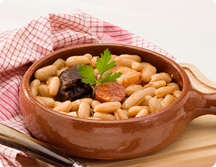
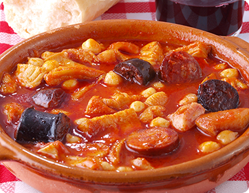
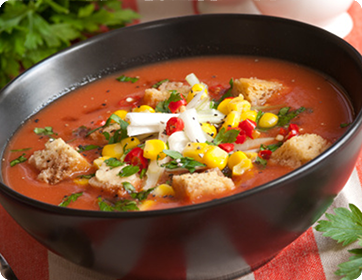
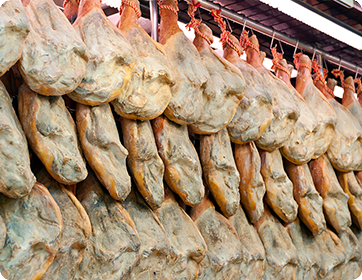

<!-- i-C-a -->
<div data-role="page" id="sub-food-football-and-fiesta-food-football-and-fiesta-yum">
  <script src="js/hammer.js"></script>
  <script src="js/jquery.hammer.js"></script>
  <script src="js/slidebar_food_football_and_fiesta.js"></script>
  <link rel="stylesheet" href="css/style_food_football_and_fiesta.css" />
  <div class="menuhousing"></div>
  <div class="homebtnholder"><div class="homebtnFoodFootballFiesta"></div></div>
  <div class="mpbtnholder"><div class="mpbtnFoodFootballFiesta"></div></div>
  <div class="cpbtnholder"><div class="cpbtnFoodFootballFiesta"></div></div>
  <div class="infobtnholder"><div class="infobtnFoodFootballFiesta"></div></div>
  <div class="credsbtnholder"><div class="credsbtnFoodFootballFiesta"></div></div>
  <div class="menubtnholder"><div class="menubtnFoodFootballFiesta"></div></div>
  <!-- <div class="bptitleholder" style="padding-top:14px;"><h1>Yum</h1></div> -->
  <div id="spacechar">&nbsp;
    <div data-role="content" class="kidzcontent">
      <div class="v-spacer"></div>
      <div class="sidebarleft-half">
		<a id="img1" style="visibility:hidden;" href="JavaScript:html5Lightbox.showLightbox(0, 'css/images/9-12/Language_and_Culture/Food_Football_And_Fiesta/Food_Football_And_Fiesta/Yum/Spanish_Cuisine_Hi_Res.jpg', '');">click here</a>
        <a id="img2" style="visibility:hidden;" href="JavaScript:html5Lightbox.showLightbox(0, 'css/images/9-12/Language_and_Culture/Food_Football_And_Fiesta/Food_Football_And_Fiesta/Yum/Callos_A_La_Madrilne_Hi_Res.jpg', ' A tripe-based dish with chorizo');">click here</a>
        <a id="img3" style="visibility:hidden;" href="JavaScript:html5Lightbox.showLightbox(0, 'css/images/9-12/Language_and_Culture/Food_Football_And_Fiesta/Food_Football_And_Fiesta/Yum/Gazpacho_Hi_Res.jpg', 'A tomato based, vegetable soup that is usually served cold.  ');">click here</a>      
        <a id="img4" style="visibility:hidden;" href="JavaScript:html5Lightbox.showLightbox(0, 'css/images/9-12/Language_and_Culture/Food_Football_And_Fiesta/Food_Football_And_Fiesta/Yum/Serrano_Hams_Hi_Res.jpg', 'Serrano hams hanging in the central market Valencia');">click here</a>  	
		
		<div id="zoomwrapper">
          <div id="pol1" class="pPiece" style="left:100px;top:270px;">
             
          </div>
          <div id="pol2" class="pPiece" style="left:75px;top:290px;">
             
          </div>
          <div id="pol3" class="pPiece" style="left:75px;top:290px;">
             
          </div>
          <div id="pol4" class="pPiece" style="left:75px;top:290px;">
             
          </div>		  
        </div><!--/zoomwrapper-->
      </div>
      
      <div class="bpcontentFoodFootballFiesta-Yum">
      <!--  <p>Youve probably heard the saying "you are what you eat", but how about "what you eat tells where youre from"?</p>

			<p>When you travel through Spain, you quickly notice that every Spanish town, big or small, has at least one typical dish.  Usually it's a pastry or dessert.  Delicious as they can be, they also tell you a story: that you are in the north (if you eat bean and chorizo soup, fabada), or the south (cold tomato soup, gazpacho), or in Madrid (tripe  yikes!).  </p>

			<p>They also tell you about the history of Spain.  For example, the Arab influence is obvious in pastries made in Andalusia; people eat a lot of pork because for centuries it was the quickest way to show which religious group you belonged to; fish is normally cooked in strong sauces in the centre of Spain, since it used to take quite a while to arrive from the sea (at which stage it had perhaps acquired some extra unwanted flavours!).
			</p> -->
      </div>
       
      <div class="botlogoholder"><a href="home.html" class="homelinkbh"></a></div>
    </div> <!-- end content -->  
  </div><!--/spacechar-->        
  
    <div class="micbtnholder"><div class="micbtnFoodFootballFiesta" id="playstopYum"></div></div>
    <div class="bFoodFootballFiesta"><div class="rwFoodFootballFiesta" id="Yumaudiobbtn"></div></div>
    <div class="plFoodFootballFiesta"><div class="plpsFoodFootballFiesta" id="Yumaudioplbtn"></div></div>
    <div class="fFoodFootballFiesta"><div class="fwFoodFootballFiesta" id="Yumaudiofbtn"></div></div>
    <div id="actualaudio-Yum" style="visibility:hidden;"></div>
  <!-- </div> -->
  
  <script>
  // sound setup is in home.html and index.js
    sound = new Audio(); // 'sound' is now an audio object
 
	var playing;
    var paused;
    (function() {
      playing = false;
      paused = true;
      $('div#pol1').css("z-index", 3);
      $('div#pol2').css("z-index", 2);
      $('div#pol3').css("z-index", 1);
      $('div#pol1 > img').css("-webkit-transform", "rotate(0deg)");	
      $('div#pol2 > img').css("-webkit-transform", "rotate(5deg)");
      $('div#pol3 > img').css("-webkit-transform", "rotate(-3deg)");		
      $('div#pol4 > img').css("-webkit-transform", "rotate(-3deg)");
      if(sound.canPlayType('audio/mpeg')) {
        $('#actualaudio-Yum').html('<audio id="Yumaudio" controls preload onpause="playsFoodFootballFiesta()" onplay="pauseFoodFootballFiesta()"><source src="audio/Food_Football_And_Fiesta/Yum.mp3" type="audio/mpeg"></audio>');
      } 
    
      $("#sub-food-football-and-fiesta-food-football-and-fiesta-yum").swipe( { swipeRight:goBack, allowPageScroll:"auto"} );
    })();
    
    $('.homelinkbh').on('tap', function() { bgsoundFoodFootballFiesta.pause(); bgsoundFoodFootballFiesta.currentTime = 0; mainaudiobg.play(); });

	
    
    $("#pol1").on('tap', function() {
      $('#img1')[0].click();
    });

    $("#pol2").on('tap', function() {
      $('#img2')[0].click();
    });
    $("#pol3").on('tap', function() {
      $('#img3')[0].click();
    }); 
	$("#pol4").on('tap', function() {
		$('#img4')[0].click();
	}); 
    function goBack() {
      $.mobile.changePage("sub-food-football-and-fiesta-food-football-and-fiesta.html", {transition: "slide", reverse: true });
    }
    
    function playsFoodFootballFiesta() {
         bgsoundFoodFootballFiesta.play();
    }
       
    function pauseFoodFootballFiesta() {
         bgsoundFoodFootballFiesta.pause();
    }
    /* ******************** */
    /* this is the microphone button */
	
    $("#playstopYum").on('tap', function() {
      if(!playing) {
        Yumaudio.play();
        $('.micbtnFoodFootballFiesta').css('background-position-x', '-81px');
        playing = true;
        paused = false;
      } else {
        Yumaudio.pause(); Yumaudio.currentTime = 0;
        $('.micbtnFoodFootballFiesta').css('background-position-x', '0px');
        playing = false;
        paused = true;
      }
    });
    
    $("#Yumaudioplbtn").on('tap', function() {
      if(!paused) {
        Yumaudio.pause();
        paused = true;
      } else {
        Yumaudio.play();
        paused = false;
      }
      //$(".audiopanel").css({"backgroundPosition":"-197px 0px"});
    });
    
    $("#Yumaudiofbtn").on('tap', function() {
      var ctime = Yumaudio.currentTime;
      Yumaudio.currentTime = ctime + 10;
    });
    
    $("#Yumaudiobbtn").on('tap', function() {
      var ctime = Yumaudio.currentTime;
      Yumaudio.currentTime = ctime - 10;
    });
    
    $("#Yumaudiopsbtn").on('tap', function() {
      Yumaudio.pause();
      //$(".audiopanel").css({"backgroundPosition":"0px 0px"});
    });
  </script>
    <script src="js/fourcardLogic.js"></script>  <!-- for card dragging effects -->
</div> <!--//home-->